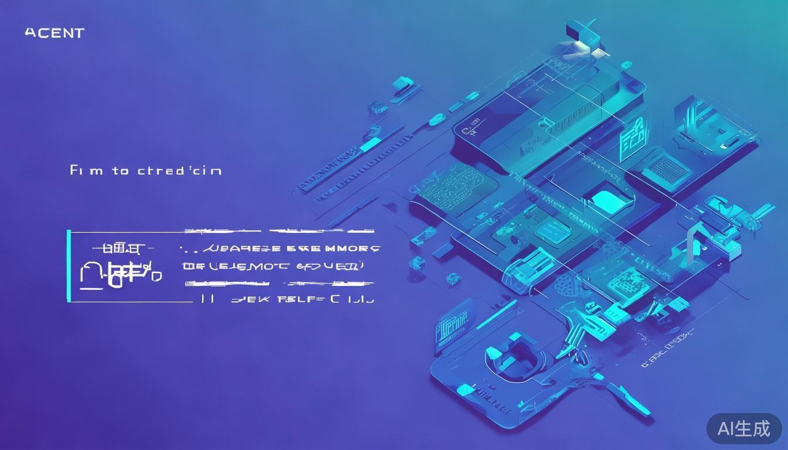

Agent 智能体实战：从概念到亲手搭建
如果说大模型是"会说话的大脑"，那 Agent（智能体）就是"长出手脚的大脑"。它能自己规划、自己调用工具、自己看结果再调整。这一篇，我们从原理、组成、框架到亲手搭一个，全程走一遍。
一、什么是 AI Agent：从大脑到能动手的助手
大语言模型（LLM）本身是一个"对话机器"——你问，它答。但它被困在对话框里：不能上网、不能发邮件、不能跑代码、不能操作文件。Agent 就是为打破这堵墙而生的。
Anthropic 2024 年 12 月发布的经典文章 《Building effective agents》（作者 Erik Schluntz & Barry Zhang，2024-12-19，https://www.anthropic.com/research/building-effective-agents）给出了迄今最清晰的定义：
"Agent 是这样一种系统：LLM 动态地主导自己的流程和工具使用，自主决定如何完成任务。"
它和"工作流（Workflow）"的关键区别在于——谁决定下一步做什么。在工作流里，路径是人写死的；在 Agent 里，路径是模型自己规划的。
一个完整的 Agent 通常跑在一个"感知-规划-行动-观察"的循环里：
- 感知（Perceive）：接收用户指令、读取当前环境状态、拿到工具返回的结果；
- 规划（Plan）：把目标拆成子任务，决定"下一步做什么"；
- 行动（Act）：调用工具（搜索、写代码、查数据库、操作浏览器…）；
- 观察（Observe）：看工具返回了什么，判断是否达成目标；没达成，就再规划、再行动，直到完成或失败。
图：Agent 感知-规划-行动-观察 闭环
图 1：Agent 的核心循环——四步闭环，由 LLM 驱动
二、Agent 的四大组成：规划 / 记忆 / 工具 / 执行

剥开任何一个 Agent 系统，你都会看到这四个模块：
| 模块 | 作用 | 典型实现 |
|---|---|---|
| 规划（Planning） | 把目标拆成可执行步骤，决定下一步 | CoT、ReAct、Plan-and-Solve、Tree of Thoughts |
| 记忆（Memory） | 跨轮次保留上下文与经验 | 短期：上下文窗口；长期：向量库 + RAG |
| 工具（Tools） | 突破"只能说话"的限制 | 搜索 API、代码执行、浏览器、文件操作、数据库 |
| 执行（Action） | 把决策落到真实世界 | API 调用、Shell 命令、GUI 操作、机器人控制 |
其中"规划"是 Agent 区别于普通工作流的核心。2022 年 Yao 等人在论文 《ReAct: Synergizing Reasoning and Acting in Language Models》（arXiv:2210.03629）提出的 ReAct 范式（Reason + Act）成为事实标准：模型先"想一想"（Thought），再决定"做一步"（Action），拿到结果（Observation）后再"想一想"——交替进行，直到完成。
"Agent 的智能不只来自模型，更来自它'能用对工具、能在对的时间用'的决策能力。" —— Anthropic, Building effective agents, 2024
三、主流框架与产品全景
到 2025–2026 年，Agent 框架已经分成了清晰的四类：
| 类型 | 代表 | 特点 |
|---|---|---|
| 底层 LLM 厂商 SDK | OpenAI Assistants / Anthropic Claude Agent SDK / Google ADK | 官方维护、与模型能力深度绑定、稳定性高 |
| 通用编排框架 | LangChain / LangGraph / LlamaIndex | 灵活、可拼装、社区大、上手快 |
| 多智能体协作 | Microsoft AutoGen / CrewAI / AG2 | 多角色分工，适合复杂任务 |
| 自主 Agent 项目 | AutoGPT / BabyAGI / Devin / Manus | 目标驱动、长程执行、研究/工程并重 |
3.1 怎么选框架？一个三步判断法
面对 LangChain、AutoGen、CrewAI、LangGraph 几十个框架，新手最大的困惑是"我该用哪个"。这里给一个三步判断法：
看任务复杂度。单一工具调用 + 简单对话 OpenAI Assistants 或 Claude Agent SDK 就够；多步规划 + 工具链 + 状态管理 LangGraph（基于 LangChain 的有状态图）最合适；多角色协作（产品经理 + 工程师 + 测试员） AutoGen 或 CrewAI。
看团队技术栈。Python 系 LangChain / AutoGen 是主力；TypeScript/JS 系 Vercel AI SDK + LangChain.js；纯大模型厂商生态 OpenAI / Claude / Gemini 各自的 SDK 最稳。
看长期可维护性。框架更新快、抽象容易过时。Anthropic 的建议是："先直接用 LLM API 写几十行代码，再考虑是否需要框架"。很多生产环境的 Agent，最后只用了 200 行自己写的代码 + 1-2 个工具，反而比套框架更稳、更易调。
Anthropic 在《Building effective agents》里给了一个反潮流但极其实用的建议："先找最简单的方案，只在必要时才引入智能体系统。" 很多任务用一个精心写好的 prompt + 检索就够了，硬上 Agent 反而更慢、更贵、更难调。
图：主流 Agent 框架定位
图 2：不同 Agent 框架在"抽象层级"和"自主程度"两个维度上的定位
四、亲手搭一个 Agent：ReAct 范式实战
理论说再多不如跑一遍。下面我们用最朴素的 30 行 Python + 一个开源 LLM，搭一个能"上网搜索 + 写报告"的最小 Agent。
# 极简 ReAct Agent 伪代码
import requests, json
def llm(prompt):
# 调任意一个 LLM API（OpenAI / DeepSeek / Ollama 均可）
return call_your_llm(prompt)
def search(query):
# 真实场景用 SerpAPI / Tavily / Bing Search
return f"[模拟搜索结果] 关于 {query} 的最新信息..."
def react_agent(question, max_steps=5):
history = ""
for i in range(max_steps):
prompt = f"""你是一个 ReAct Agent，请按以下格式回答：
问题：{question}
历史：{history or '无'}
请选择：
- Thought: 你的思考
- Action: search[你的搜索词] 或 Finish[最终答案]
"""
out = llm(prompt)
if "Finish[" in out:
return out.split("Finish[")[1].split("]")[0]
# 解析 Action
action = out.split("Action:")[1].split("\n")[0].strip()
if action.startswith("search["):
q = action[7:-1]
obs = search(q)
history += f"\n第{i+1}步：{action} -> {obs}\n"
return "未能在限定步数内完成"
# 使用
print(react_agent("2025 年大模型领域最重要的三件事是什么？"))
这段代码就是 ReAct 的全部秘密：
- 让 LLM 决定"现在该搜什么"；
- 把搜索结果塞回 prompt；
- 再让 LLM 决定"够不够、要不要再搜"；
- 直到它主动输出 Finish。
4.1 一个真实跑出来的例子
让我们把上面那段 30 行代码真正"跑"一遍（用模拟搜索结果代替真实 API），看看 ReAct Agent 怎么"一步步把事儿办了"。问题是："2025 年大模型领域最重要的三件事是什么？"
第 1 轮：思考（Thought）："我需要先知道 2025 年大模型的最新动态。"
第 1 轮：行动（Action）：search[2025 大模型 重要进展]
第 1 轮：观察（Observation）：拿到一段搜索摘要（模拟）——"OpenAI 发布 o3、DeepSeek-R1 引爆开源、Agent 协议 MCP 成为标准……"
第 2 轮：思考："我需要看更权威的信息源。"
第 2 轮：行动：search[DeepSeek-R1 论文 2025]
第 2 轮：观察：拿到 DeepSeek-R1 论文摘要。
第 3 轮：思考："信息够了，可以总结。"
第 3 轮：行动：Finish[1. OpenAI o 系列把推理能力推到新高度；2. DeepSeek-R1 用纯 RL 训出开源推理王；3. MCP 协议让 Agent 工具调用标准化。]
整个过程不到 10 秒，Agent 自主跑了 3 轮，调用 2 次搜索，输出了结构化答案。这就是一个最小可用 Agent的全部能力——把"猜下一个 token"变成了"完成一个真实任务"。
把它接上浏览器（Playwright）、数据库、邮件 API，它就变成了一个真正能替你干活的 Agent。LangGraph、AutoGen 这类框架，本质上是把上述循环做了工程化封装、加上状态管理、错误恢复、多智能体协作。
图：ReAct 推理-行动循环
图 3：ReAct 的核心循环——思考、行动、观察，三步交替
五、落地场景与避坑
Agent 不是"哪里都能用"。根据 Anthropic 的建议和业界实践，最适合 Agent 的场景是：
- 开放性问题：你无法预判需要多少步才能完成（比如"调研 X 领域最新进展"）；
- 工具丰富：有可调用的 API、数据库、文档系统；
- 容错空间：错了能补救（人审核、撤销操作、回滚事务）。
不适合 Agent 的场景：
- 流程固定、步骤可枚举（用普通工作流/脚本更稳）；
- 高风险、不可逆（医疗诊断、金融交易、关键基础设施——人必须 in the loop）；
- 提示词 + 一次 LLM 调用就能解决的事（别为了"用 Agent"而用 Agent）。
常见翻车与对策
| 问题 | 原因 | 对策 |
|---|---|---|
| Agent 陷入死循环 | 没有终止条件 | 设置最大步数、检测重复模式、强制 Finish |
| 调用工具失败 | API 错误、参数错 | 加 try/except、给模型"重试"能力、提供回退工具 |
| 幻觉执行结果 | 模型编造工具返回值 | 真实调用、记录原始输出、人审关键节点 |
| 成本失控 | 多步循环 × 上下文膨胀 | 压缩历史、限制步数、用小模型做规划/大模型做总结 |
5.1 三个最容易出价值的落地场景
结合国内外的实践，Agent 最容易出价值的三个场景是：①企业内部知识问答（接 RAG 查公司文档、写周报、汇总会议纪要、回答员工问的"年假怎么请"）；②客服与销售（多轮对话 + 查订单 + 处理退款，Anthropic 在《Building effective agents》里专门点名 Coinbase 用 Claude 做客服 Agent 的案例）；③研发辅助（自动写单元测试、改 Bug、Code Review、生成接口文档）。
这三个场景的共同点是：工具丰富 + 步骤多变 + 容错空间大，完美匹配 Agent 的能力边界。反过来说，流程死板、高风险、强合规的场景（医疗诊断、金融交易、关键基础设施）就先别上 Agent——人必须 in the loop。
"2025 年之后，AI 的护城河不是'用没用 Agent'，而是'能不能把 Agent 用对场景、配上对的工具和护栏'。"
六、Agent 时代的开发者能力模型
2024-2026 年，Agent 让"开发者"这个词的含义彻底变了。过去的核心竞争力是"写代码"，未来的核心竞争力是"让一队 Agent 替你把代码写完"。具体来说，三种新能力变得不可或缺：
1. 任务拆解（Task Decomposition）
能不能把"做一个电商网站"拆成"设计数据模型 写 API 搭前端 接支付 做 SEO"——拆得越细、边界越清晰，Agent 越能并行干。拆得差的，给 Agent 它也只会糊一团。Y Combinator 在 2025 年的创业建议里专门强调："能用 Agent 的人 vs 不能用的人，差距在拆任务，不在写 prompt。"
2. 工具工程（Tool Engineering）
Agent 强不强，80% 取决于你的工具有多干净。给 Agent 一个写得好、有清晰 schema、带错误信息的 API，它能自己用得很溜；给一个"啥都返回"的脏 API，它立马翻车。Anthropic 在《Building effective agents》里专门有一节讲"工具的设计"——把工具当作"给另一个程序员的接口"来写，文档、边界、错误码一个不能少。
3. 评估与护栏（Evaluation & Guardrails）
Agent 会出错、会跑偏、会"幻觉"。你必须有能力给它装"安全网"：执行前的输入校验、执行中的步骤监控、执行后的人审或自动评分。LangSmith、LangFuse、Arize Phoenix 这类评估平台在 2024-2025 年爆发式增长，核心就是因为大家都意识到：没有评估体系的 Agent 项目，上了生产就是定时炸弹。
这三种能力叠加，构成了 2026 年最值钱的 AI 工程师画像：不是"会写代码的人"，而是"会设计 Agent 工作流 + 搭工具 + 装护栏的人"。这种人才在招聘市场已经被开出传统 3-5 倍的价格，LinkedIn 2025 年的 AI 岗位增长 40% 主要来自这一类。
4. 写在最后：从"用 Agent"到"被 Agent 改变"
2026 年，Agent 不再是一个"加分项"，而是一个"入场券"。不会用 Agent 的开发者，就像 2010 年不会用 Git 的开发者——不是被淘汰，而是被边缘化。这不是危言耸听：Stack Overflow 2025 年的开发者调查显示，超过 60% 的专业开发者已经在日常工作流中嵌入至少一个 Agent，而 2023 年这个数字还不到 15%。
好消息是：上手 Agent 的门槛比学一门新编程语言低得多。你只需要会写 Python、能调 API、有一份清晰的 prompt，就能在一周内搭出第一个能用的 Agent。剩下的，就是把它接到你的真实工作里，去"用"它——用出来的经验，比读十篇论文都管用。我们见过太多"论文读了一堆、Agent 一个没跑"的开发者，最后都被"边用边学"的同事甩开。
记住三句话：先简单后复杂、先窄后宽、人必须在回路。做到这三点，2026 年的你不会输给任何一个 Agent——相反，你会有一个 7×24 小时不睡觉的 AI 同事。
资料来源
- Yao S. et al. (2022). ReAct: Synergizing Reasoning and Acting in Language Models. arXiv:2210.03629. https://arxiv.org/abs/2210.03629
- Schluntz E. & Zhang B. / Anthropic (2024-12-19). Building effective agents. https://www.anthropic.com/research/building-effective-agents
- Wu Q. et al. / Microsoft (2023). AutoGen: Enabling Next-Gen LLM Applications via Multi-Agent Conversation. arXiv:2308.08155. https://arxiv.org/abs/2308.08155
- Significant Gravitas. AutoGPT (2023). https://github.com/Significant-Gravitas/AutoGPT
- Nakajima Y. BabyAGI (2023). https://github.com/yoheinakajima/babyagi
- OpenAI. Assistants API 官方文档. https://platform.openai.com/docs/assistants
- LangChain. LangGraph 官方文档. https://langchain-ai.github.io/langgraph/
- Wikipedia: Intelligent agent. https://en.wikipedia.org/wiki/Intelligent_agent
出处声明：本页内容为白驹全局大脑原创，或已标注引用来源；改编内容遵循原始项目许可证（如 MIT / CC），不侵犯原作者权益。若引用内容涉及版权问题，请联系我们更正。